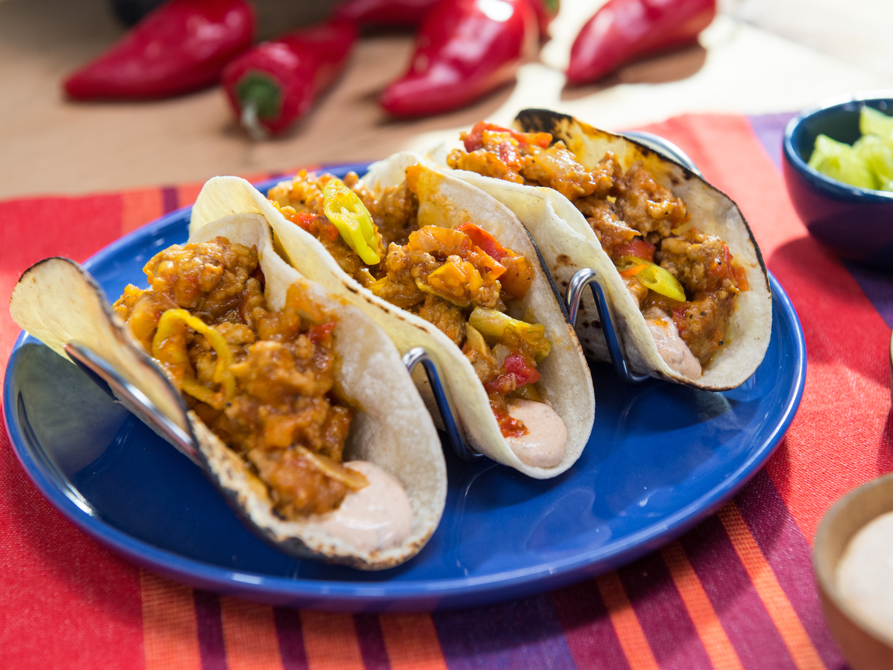

Home
Spicy Chicken Tacos

A quick and flavorful dish perfect for taco lovers!
Spicy Chicken Tacos are a flavorful and satisfying dish that packs a punch
with its bold seasoning and tender chicken. Perfect for a quick weeknight
dinner or a fun meal with friends, these tacos feature juicy, shredded
chicken that's seasoned with a blend of chili powder, cumin, paprika, and
garlic. Served in warm tortillas and topped with fresh salsa, creamy
guacamole, crisp lettuce, and shredded cheese, these tacos are a delicious
balance of spicy, savory, and fresh. Easy to customize with your favorite
toppings, they make an irresistible, crowd-pleasing meal!
Ingredients
- 2 chicken breasts, boneless and skinless
- 1 tsp chili powder
- 1 tsp cumin
- 1/2 tsp paprika
- 1/4 tsp garlic powder
- 1 tbsp olive oil
- Tortillas
- Salsa, guacamole, shredded lettuce, cheese (for toppings)
Steps
-
Season Chicken: Rub the chicken breasts with chili
powder, cumin, paprika, garlic powder, salt, and pepper.
-
Cook Chicken: Heat olive oil in a skillet over medium
heat. Cook the chicken for about 6-8 minutes on each side until fully
cooked.
-
Shred Chicken: Remove from heat and shred the chicken
with a fork.
-
Assemble Tacos: Place the shredded chicken into
tortillas and add toppings like salsa, guacamole, lettuce, and cheese.
-
Serve: Enjoy your spicy chicken tacos with a squeeze of
lime!